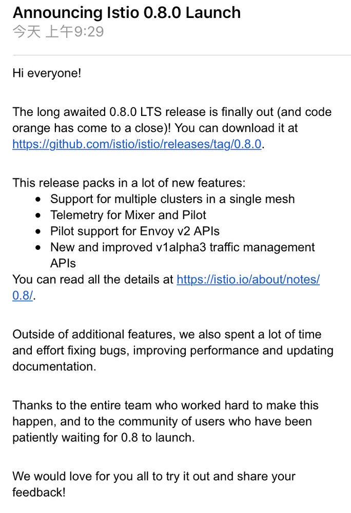

北京时间 2018 年 6 月 1 日（儿童节）上午 9: 30 Istio 0.8.0 LTS（长期支持版本）发布。该版本除了常见的一堆错误修复和性能改进之外，还包含以下更新和新功能。

网络
- 改进了流量管理模型。我们终于准备好了推出新的流量管理配置模型。该模型增加了许多新功能并解决了先前模型的可用性问题。
istioctl中内置了一个转换工具来帮助您迁移旧模型。试用新的流量管理模型。 - Ingress/Egress 网关。我们不再支持将 Kubernetes Ingress 配置与 Istio 路由规则相结合，因为这会导致一些错误和可靠性问题。Istio 现在支持独立于 Kubernetes 和 Cloud Foundry 平台的 ingress/egress 网关，并与路由规则无缝集成。
- **新的网关支持基于服务器名称指示（Server Name Indication）**的路由，以及根据 SNI 值提供证书。HTTPS 访问外部服务将基于 SNI自动配置。
- Envoy v2。用户可以选择使用 Envoy 的 v2 API 注入 sidecar。在这种模式下，Pilot使用 Envoy 的 v2 聚合发现服务 API将配置推送到数据平面。该方式提高了控制平面的可扩展性。
- 受限入站端口。我们现在将 Pod 中的入站端口限制为由该 Pod 内运行的应用程序所声明的端口。
安全
- 介绍 Citadel。我们终于给安全组件确定了名字。它就是我们之前称呼的 Istio-Auth 或 Istio-CA，现在我们将它称之为 Citadel。
- 多集群支持。对于多集群部署，支持在每集群中使用 Citadel，以便所有 Citade 都拥有相同的根证书且工作负载可以通过网格彼此验证。
- 验证策略。我们引入了可用于配置服务间认证策略身份认证（相互 TLS）和最终用户认证。这是启用相互 TLS 的推荐方式（通过现有的配置标志和服务注释）。了解更多。
遥测
- 自我报告。现在 Mixer 和 Pilot 产生的流量也会通过 Isitio 的遥测管道，就像网格中的其他服务一样。
部署
- 上碟 Istio 小菜。Istio 有丰富的功能，但是用户不一定要全部安装和使用。通过使用 Helm 或
istioctl gen-deploy，用户可以选择安装他们想要的功能。例如，用户可能只想安装 Pilot 并享受流量管理功能，无需处理 Mixer 或 Citadel。详细了解通过 Helm 定制和istioctl gen-deploy。
Mixer 适配器
- CloudWatch。Mixer 现在可以向 AWS CloudWatch 报告指标。了解更多。
0.8 版本的已知问题
- 指向 headless serivce 的虚拟服务网关不起作用（Issue #5005）。
- 在 Kubernetes 1.10.2 中有问题。解决方法是使用 Kubernetes 1.9 或将节点镜像切换到 Ubuntu。